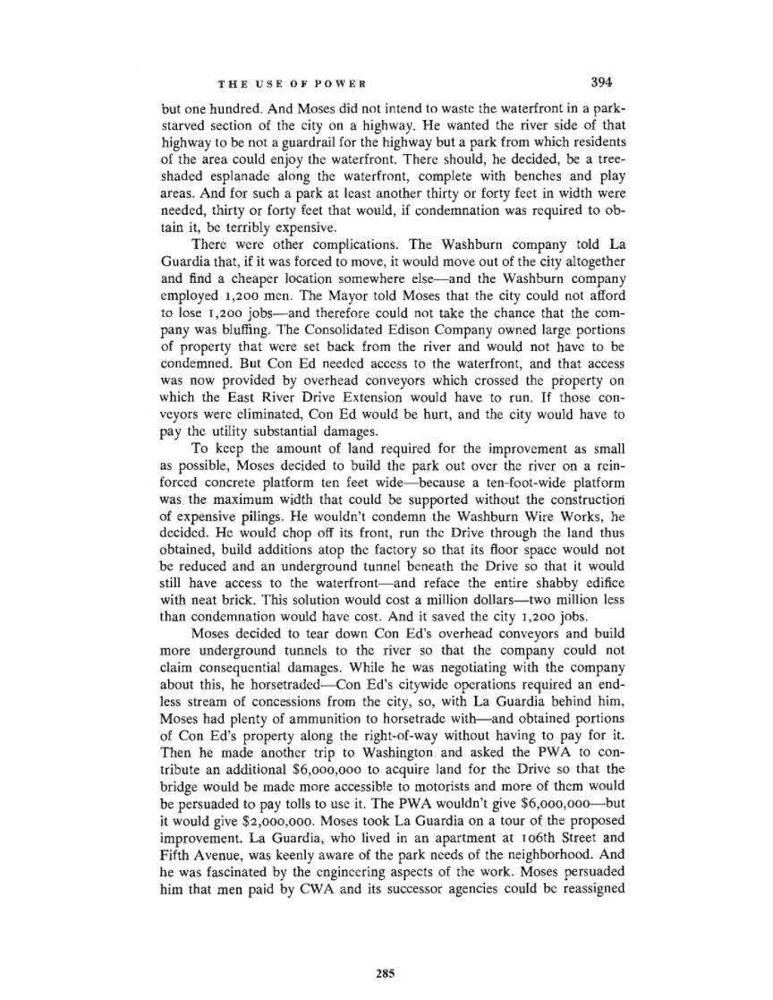

THEUSEOFPOWER394butone hundred.AndMoses didnotintendto waste thewaterfrontin apark-starvedsectionof the city on ahighway.He wantedthe river side ofthathighwayto benota guardrailfor thehighwaybutaparkfromwhichresidentsof theareacouldenjoythe waterfront.Thereshould,he decided,be atree-shadedesplanadealong thewaterfront,completewithbenchesandplayareas.Andfor suchaparkat leastanotherthirtyor fortyfeet inwidthwereneeded,thirtyor forty feetthat would,if condemnationwas requiredtoob-tain it, beterriblyexpensive.Therewereothercomplications.TheWashburncompanytoldLaGuardiathat, if it wasforcedto move, itwouldmoveoutof the cityaltogetherandfind acheaperlocationsomewhereelse-andtheWashburncompanyemployed1,200men.TheMayortold Mosesthat the citycouldnot affordto lose1,200jobs-andthereforecouldnot take the chancethat the com-panywas bluffing.TheConsolidatedEdisonCompanyownedlargeportionsof propertythatwere setbackfromthe riverandwould not have to becondemned.ButConEdneededaccess to thewaterfront,andthataccesswas nowprovidedby overheadconveyorswhichcrossedthepropertyonwhich theEastRiverDriveExtensionwouldhave torun.Ifthosecon-veyorswereeliminated,ConEdwouldbe hurt,andthe citywouldhave topaythe utilitysubstantialdamages.To keep theamountoflandrequiredfor theimprovementas smallas possible,Mosesdecidedto buildtheparkoutoverthe river on arein-forcedconcreteplatformten feetwide-becausea ten-foot-wideplatformwasthemaximumwidththat couldbe supportedwithouttheconstructionof expensivepilings. Hewouldn'tcondemntheWashburnWireWorks,hedecided.He wouldchopoff itsfront,runthe Drivethroughthelandthusobtained,buildadditionsatopthe factorysothatits floorspacewouldnotbe reducedandan undergroundtunnelbeneaththe Driveso that it wouldstill haveaccess to thewaterfront-andrefacethe entireshabbyedificewithneatbrick.Thissolutionwouldcost amilliondollars-twomillionlessthancondemnationwouldhave cost.Andit savedthe city1,200jobs.Mosesdecidedto tear downConEd'soverheadconveyorsandbuildmoreundergroundtunnelsto theriverso thatthe companycouldnotclaimconsequentialdamages.Whilehe wasnegotiatingwiththecompanyaboutthis, hehorsetraded-ConEd'scitywideoperationsrequiredan end-less streamof concessionsfrom the city, so, withLaGuardiabehindhim,Moseshadplentyof ammunitionto horsetradewith-andobtainedportionsofConEd'spropertyalongthe right-of-waywithouthavingtopayfor it.Thenhemadeanothertrip toWashingtonandaskedthePWAto con-tributean additional$6,000,000to acquirelandfor theDrivesothatthebridgewouldbe mademoreaccessibleto motoristsandmoreof themwouldbe persuadedtopay tolls to use it.ThePWAwouldn'tgive$6,000,000---'-butit wouldgive $2,000,000.MosestookLaGuardiaon atourof theproposedimprovement.LaGuardia,who lived in anapartmentatI06thStreetandFifthAvenue,was keenlyawareof theparkneeds of theneighborhood.Andhe wasfascinatedby theengineeringaspectsof thework.Mosespersuadedhim that menpaidbyCWAandits successoragenciescouldbe reassigned285
